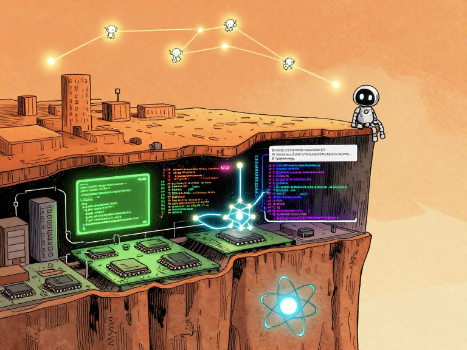
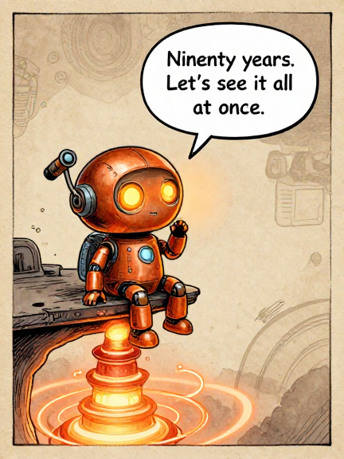
Ninety years. Let's see it all at once.We've traveled ninety years together — from a mathematician's daydream to swarms of AI agents building software in parallel. We've met the people, followed the ideas, watched the machines get smaller and smarter.
But we've never stepped back and looked at the WHOLE thing at once. Until now.
Somewhere beneath your feet, right now, electrons are moving. They are flowing through transistors — billions of them — switching on and off billions of times per second.
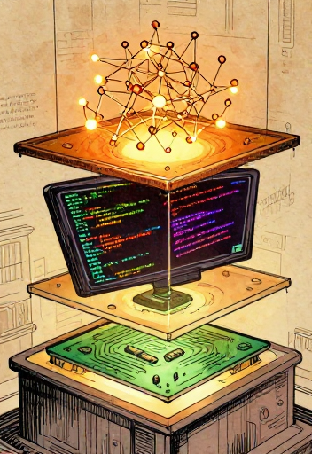
Above those transistors, an operating system is juggling thousands of tasks. Above the OS, a programming language is translating human ideas into machine instructions. Above that language, a neural network is predicting the next word you might want to read. And above that, an AI agent might be writing code, running tests, and fixing its own mistakes.
Every layer depends on the one below it. Every layer hides the complexity beneath it and presents a simpler interface to the layer above. This idea — abstraction — is the single most powerful concept in the history of computing. It is the reason a 14-year-old can build a website without understanding quantum physics.
Eight layers, ninety years of human ingenuity
In this final issue, we are going to see the whole stack. All of it. From physics to your prompt. And then we are going to look at what comes next — and what role you might play in it.
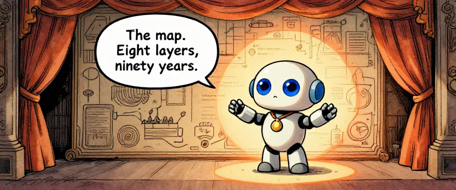
The map. Eight layers, ninety years.Here is the computing abstraction stack — every major layer of technology between the electrons in your device and the words on your screen, laid out from bottom to top.
The computing abstraction stack — physics to swarms
Each layer hides the complexity below it and exposes a simpler interface above. A programmer writing Python does not need to understand quantum tunneling. An AI agent planning a coding task does not need to think about memory allocation.
As Edsger Dijkstra said: "The purpose of abstraction is not to be vague, but to create a new semantic level in which one can be absolutely precise."
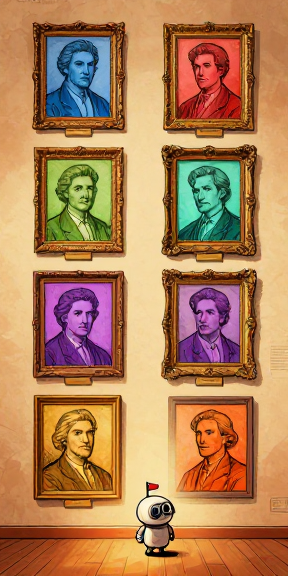
Or, in a formulation often attributed to David Wheeler: "All problems in computer science can be solved by another level of indirection."
The computing stack is living proof.
The abstraction stack is not a ladder of prestige — every layer is essential, and every layer was someone's life work. Physics is not 'less important' than AI. Hardware engineering is not 'less sophisticated' than machine learning. The reason you can type a question in plain English and get an intelligent answer is that hundreds of thousands — perhaps millions — of people, across ninety years, each solved one layer's problems well enough that the next layer could exist.
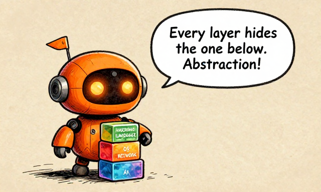
Every layer hides the one below. Abstraction!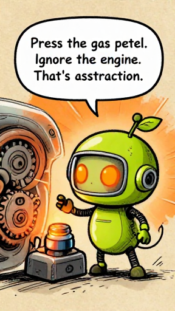
Press the gas pedal. Ignore the engine. That's abstraction.Every layer in the computing stack does the same thing the gas pedal does: it hides overwhelming complexity and exposes a simple interface.
Driving a car vs. the computing stack — same principle of hidden layers
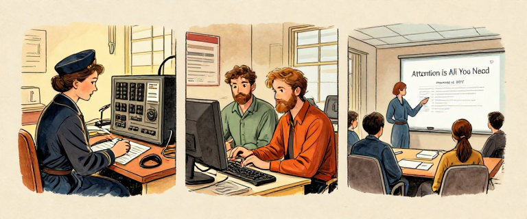
When Grace Hopper built the first compiler in 1952, she created an abstraction. When Thompson and Ritchie built Unix in 1969, they created an abstraction. When Vaswani and colleagues published the Transformer in 2017, they created an abstraction.
Each abstraction is an act of trust. You trust that the layer below you works correctly. And mostly, that trust is justified. But not always.
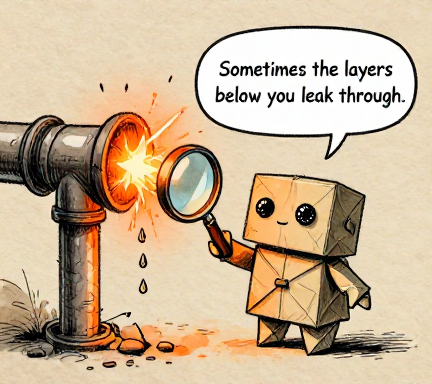
Sometimes the layers below you leak through.In 2002, Joel Spolsky coined "The Law of Leaky Abstractions": all non-trivial abstractions, to some degree, are leaky. A performance problem in your AI agent traces back to GPU architecture. A security vulnerability traces back to memory management in C.
Grace Hopper used to hand out 11.8-inch pieces of wire to admirals — representing the distance light travels in one nanosecond — to explain why satellite communication was slow. Understanding the full stack gives you diagnostic superpowers. When something breaks, you know where to look.
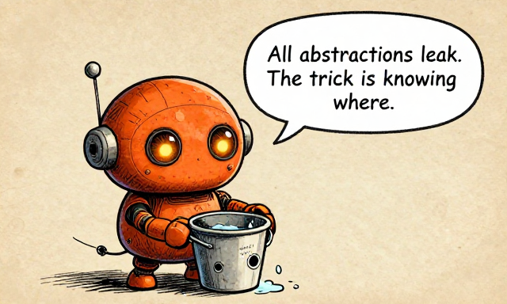
All abstractions leak. The trick is knowing where.Can you think of other abstractions in daily life? A light switch hides the power grid. A restaurant menu hides the kitchen. Money hides a complex web of trust and accounting. Abstractions are everywhere — computing just made them the foundation of an entire technology stack.
Ride between all 8 floors of computing — each one has an interactive demo. Toggle a transistor. Wire a logic gate. Watch a swarm race. See abstraction in action.
Open Full Stack Elevator →Abstraction is not simplification. Simplification throws away detail. Abstraction HIDES detail behind a clean interface while keeping all the power underneath. It lets you be "absolutely precise" (Dijkstra) at your own level without drowning in every level below.
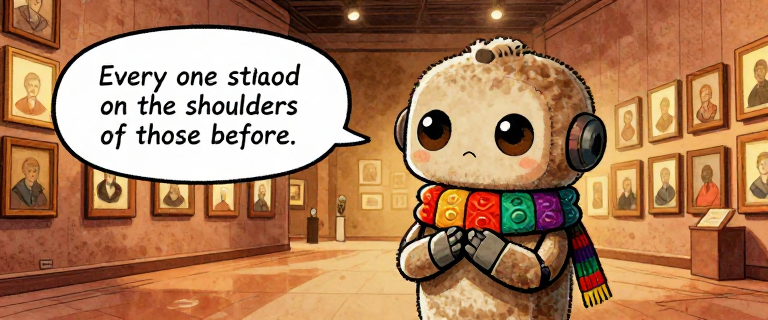
Every one stood on the shoulders of those before.Here they are. The builders of the computing stack, in the order they appear in our story. Notice how each generation inherits what the previous generation built — and then extends it one layer higher.
The builders of computing, 1931-1974
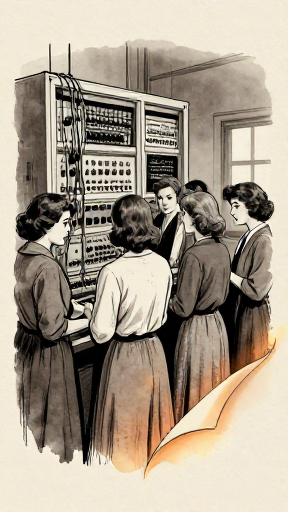
Notice who is missing from the fame. The six women who programmed ENIAC were erased from photographs and forgotten for decades. Tommy Flowers spent his own money building Colossus, then was silenced by the Official Secrets Act. Konrad Zuse built the Z3 in his parents' living room — and it was destroyed in a bombing raid.
History is not always fair. But their work endured.
The builders of computing, 1983-2025+
This timeline spans one long human lifetime. Someone born the year Turing published 'On Computable Numbers' (1936) would have been 86 when ChatGPT launched (2022). The entire history of computing — from an imaginary tape machine to agents that write code — fits within the span of a single life.
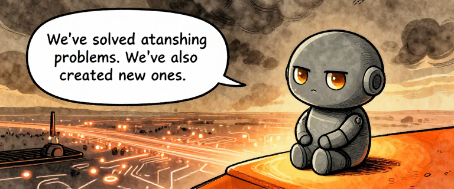
We've solved astonishing problems. We've also created new ones.For all its achievements, computing in 2026 faces a set of genuinely unsolved problems. These are not minor engineering bugs. They are deep, structural challenges that will shape how AI and computing evolve over the coming decades.
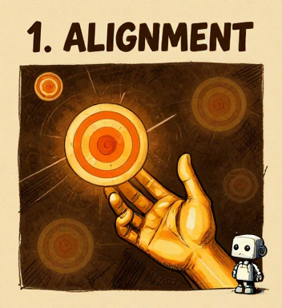
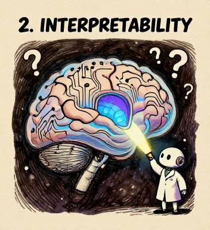
1. The Alignment Problem: How do we ensure AI does what we actually want — not just what we literally say? Stuart Russell's "King Midas" analogy: the genie gave Midas exactly what he asked for — and it was a disaster.
2. Interpretability: We cannot fully explain WHY a large language model produces a specific output. Anthropic has made significant progress — identifying features inside Claude — but the field is far from guarantees.
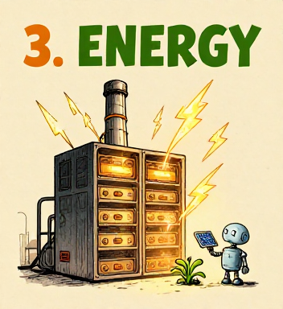
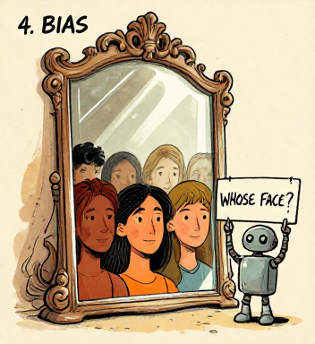
3. Energy & Compute Costs: Training a frontier AI model can use as much electricity as a small town consumes in a year. GPT-3's training used approximately 1,287 MWh (Patterson et al., 2021). Efficiency improvements are closing the gap, but the tension between capability and cost is not going away.
4. Bias in Training Data: AI learns from data written by humans — and humans have biases. As Timnit Gebru documented in "Stochastic Parrots" (2021), larger models can amplify rather than neutralize biases. The AI is a mirror. The question is whose face the mirror reflects.
Not everyone agrees AI risk is urgent. Yann LeCun (from Issue 6) has called existential AI risk concerns overblown. Others argue slowing AI progress is itself dangerous — that we need to accelerate to solve problems like climate change and disease. This debate is live and unsettled. Where do YOU stand?
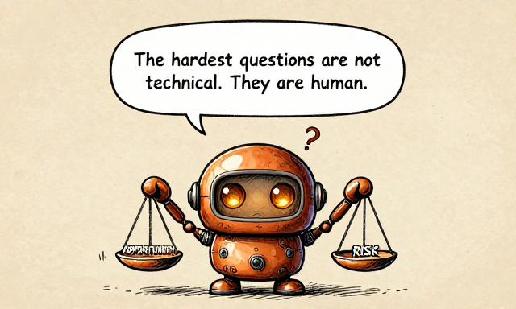
The hardest questions are not technical. They are human.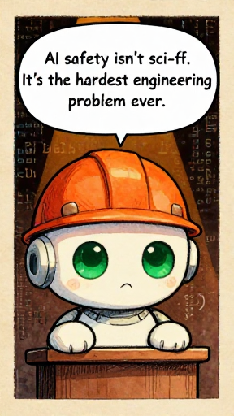
AI safety isn't sci-fi. It's the hardest engineering problem ever.Anthropic was founded in 2021 by Dario and Daniela Amodei on a specific bet: that safety research and capability research are complementary, not opposed. Building safer AI requires understanding AI deeply, and understanding AI deeply produces safer systems.
Their core innovation is Constitutional AI (published 2022). Instead of relying entirely on human reviewers, give the AI a set of principles — a constitution — and train it to critique and revise its own outputs against those principles.
Constitutional AI: self-critique, AI feedback, and written principles
RLHF — Reinforcement Learning from Human Feedback — remains important too. But it has real limitations: it depends on who the volunteers are, and it can train models to be sycophantic — agreeing with users rather than challenging incorrect beliefs, because agreement gets rated as "more helpful."
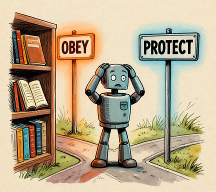
Isaac Asimov's Three Laws of Robotics — a robot may not harm a human, must obey orders, and must protect itself (in that priority order) — were a simpler version of this idea. But Asimov wrote 35 stories showing why simple rules fail in complex situations. Real alignment requires understanding context and navigating tradeoffs.
Anthropic has published the principles behind Constitutional AI — you can read examples of the rules Claude uses. The full constitution is proprietary and evolves over time, but the approach itself is transparent: principles are written by humans, not hidden in opaque reward models. The meta-question — "Who writes the constitution?" — is irreducibly social and political. But at least the question is visible.
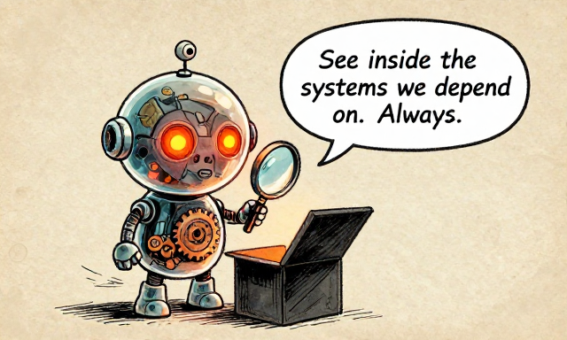
See inside the systems we depend on. Always.AI safety is not about preventing robot rebellions. It is about the hardest engineering problem in history: building systems that pursue human goals in a world where human goals are complex, contradictory, and context-dependent. Constitutional AI does not solve this. But it makes the problem visible, auditable, and improvable. That is a start.
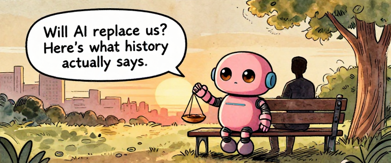
Will AI replace us? Here's what history actually says.Every major technology shift triggers the same fear: "This will make us obsolete." And every time, the answer is more complicated than either side wants to admit.
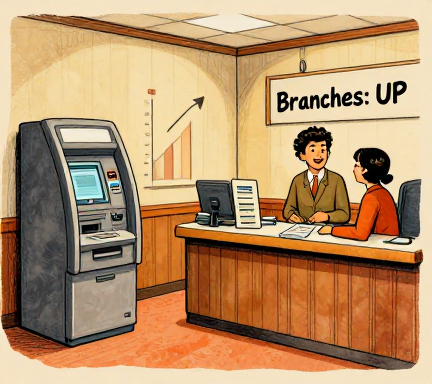
When ATMs arrived in the 1970s, many predicted bank tellers would vanish. What actually happened? ATMs reduced branch costs. Banks opened MORE branches. US teller employment rose from ~300,000 to ~600,000 by 2010. But the job changed completely: less cash counting, more relationship management. After 2010, tellers declined as mobile banking grew.
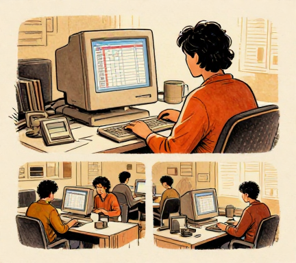
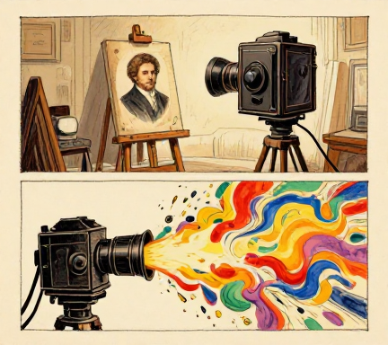
When spreadsheets automated calculations in the 1980s, accountant jobs increased. When photography arrived in the 1840s, it freed painters from realism — leading to Impressionism and Abstract art.
But the pattern is not always benign. The Luddites of the 1810s destroyed textile machinery because automation genuinely eliminated their skilled jobs. History's lesson: the long-term outcome can be positive while the short-term transition is painful.
A 2022 GitHub study: developers using Copilot completed tasks 55% faster — but spent more time on design and code review. A 2023 Harvard/BCG study: consultants using GPT-4 produced 40% higher-quality work — but only within the model's capability frontier. Outside it, they performed worse, over-relying on confident but incorrect output.
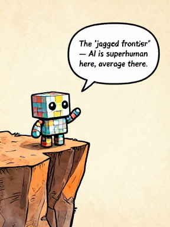
The 'jagged frontier' — AI is superhuman here, average there.Ethan Mollick calls this the "jagged frontier": AI capabilities are not a smooth line. AI is superhuman at some tasks and below average at others, and the boundary is hard to predict. Human judgment about when to use AI — and when to override it — is one of the most valuable skills of the coming decade.
The AI autonomy spectrum — from tools to autonomous swarms
The strongest evidence suggests AI is most powerful as an augmentation tool — it raises the floor more than it raises the ceiling. It helps less-experienced workers perform closer to expert level. The pattern is the same one the entire series has documented: new tools do not replace thinking. They elevate it to a higher layer of abstraction.
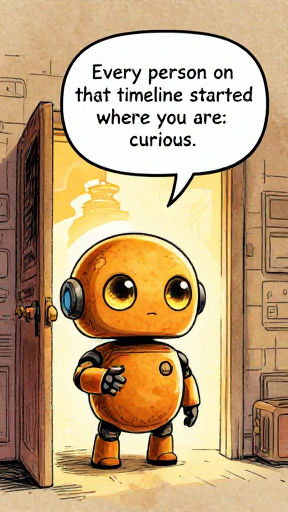
Every person on that timeline started where you are: curious.Grace Hopper was told no one would use a compiler — she built one anyway. Linus said his OS was 'just a hobby, won't be big.' Fei-Fei Li labeled millions of images because she believed the data would matter. They didn't know what their work would become. They just started.
One of the most persistent myths in computing is that you need to start young, or start with a math degree, or start with expensive equipment. The actual history tells a different story.
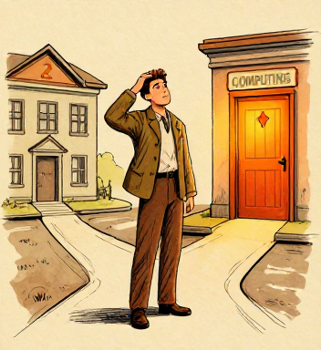
John Backus, who created FORTRAN, was a mediocre student who stumbled into computing after failing to complete a medical degree. Tim Berners-Lee was a physicist who wanted a better way to share documents — not a computer scientist trying to build a world-changing platform. Ken Thompson wrote the first Unix in three weeks while his wife was on vacation.
The computing stack is not finished. The next layers will not be built by one kind of person. The problems ahead — alignment, interpretability, bias, energy, collaboration — are not purely technical. They require people who understand ethics, policy, design, communication, culture, and the lived experiences of communities underrepresented in technology.
Three paths into computing — all equally valuable
The barriers to entry are lower than ever — free courses, open-source tools, online communities. But real obstacles still exist: access to computers, time, mentorship, and supportive environments. If you have the resources and curiosity, start building. If you face barriers, know that communities exist to help — and the field desperately needs more diverse voices.
Seven lines of Python — your first conversation with an AI model
Which layer of the stack interests you most? Are you drawn to the physics of hardware? The elegance of programming languages? The mystery of how neural networks learn? The social challenges of AI safety? There is no wrong answer. The stack needs people at every level.
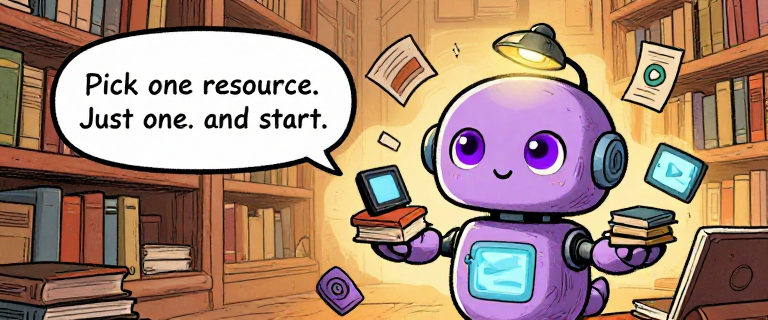
Pick one resource. Just one. And start.We have covered ninety years in ten issues. Every topic deserves a deeper dive. Here is where to go next, organized by what you want to explore.
Seven essential books for going deeper
Six free online courses to continue your journey
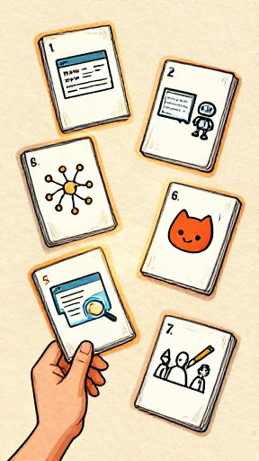
HANDS-ON PROJECTS (no experience required):
1. Build a personal website with HTML/CSS/JS
2. Try the Claude API — write a Python script
3. Train a tiny neural network from scratch
4. Contribute to an open-source project on GitHub
5. Experiment with prompt engineering
6. Try Claude Code or a similar agentic tool
7. Write about AI for your community
INTERACTIVE LABS FROM THIS SERIES:
Turing Machine Sandbox (Issue 1) · Logic Gates Lab (Issue 2) · Compiler Explorer (Issue 3) · Unix Pipe Playground (Issue 4) · Neural Network Playground (Issue 6) · Attention Visualizer (Issue 7) · Agent Sandbox (Issue 8) · Swarm Simulator (Issue 9) · Full Stack Elevator (Issue 10)
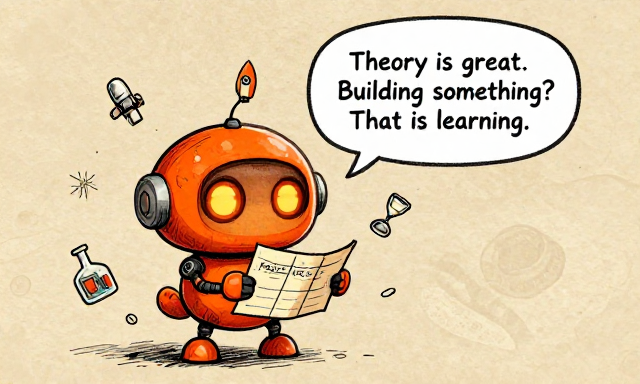
Theory is great. Building something? That is learning.Every expert in every field started exactly where you are: knowing nothing, but curious enough to begin. The distance between 'I know nothing about computing' and 'I am building something' is smaller than it has ever been. The stack is taller than ever — and that means you can stand on more shoulders than any previous generation.
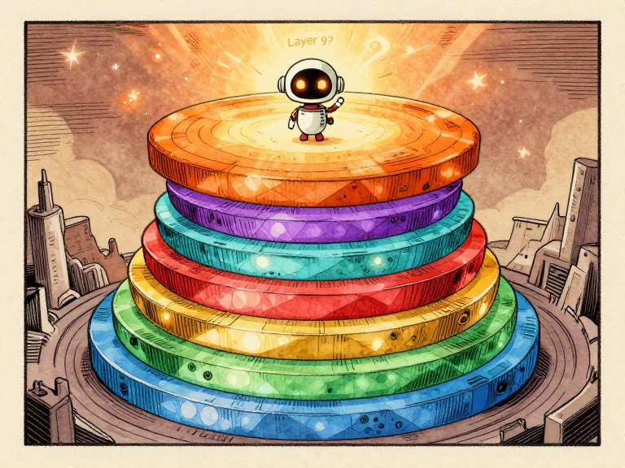
Alan Turing imagined a machine in 1936. Ninety years later, that machine's descendants can read, write, code, reason, and collaborate in teams. But the story of computing has never been about machines. It has been about people.
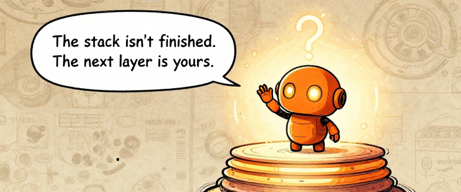
The stack isn't finished. The next layer is yours.We started with a question: can a machine solve any math problem? Turing proved the answer is no — and invented the blueprint for every computer. Then other people built it, layer by layer. Hopper taught machines to understand English. Thompson and Ritchie wrote an operating system so elegant it still shapes computing 55 years later. Berners-Lee connected all the world's knowledge. Hinton, LeCun, and Bengio proved machines could learn.
A team at Google wrote a paper called 'Attention Is All You Need' and changed everything. Then AI learned to use tools, run code, and fix its own mistakes. Then swarms of agents started building things together.
Ninety years. Hundreds of people. Eight layers. Each one built on the last. Each one someone's life work.
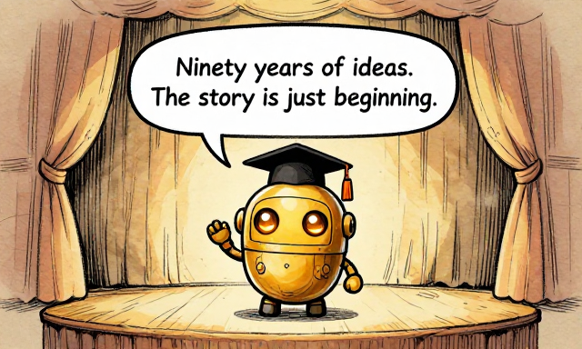
Ninety years of ideas. The story is just beginning.The stack is not finished. There will be a ninth layer, and a tenth, and layers we can't imagine. Some will be built by people reading this right now.
Understanding where computing came from gives you the power to shape where it goes. You have the map. The rest is up to you.
The stack awaits its next layer
The story of computing has never been about machines. It has been about people — curious, stubborn, brilliant people who looked at the impossible and said, "What if?"
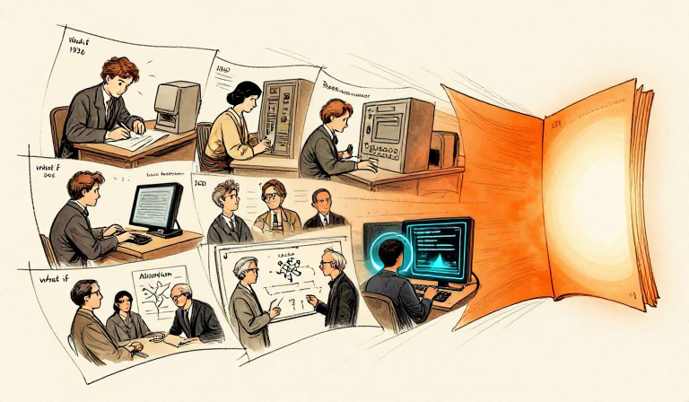
What if a machine could compute anything? (Turing, 1936.) What if computers could understand English? (Hopper, 1952.) What if small tools could be piped together? (Thompson & Ritchie, 1969.) What if all the world's knowledge was linked? (Berners-Lee, 1989.) What if machines could learn from data? (Hinton, LeCun, Bengio.) What if AI could understand language? (Vaswani et al., 2017.) What if agents could work in teams? (2025-2026.)
The next "what if" is yours.
The history of computing is the history of people asking "What if?" — and then building the answer. Each answer became a layer that the next question could stand on. Understanding the stack is not just knowledge. It is power. The power to see where we are, how we got here, and where we might go next.
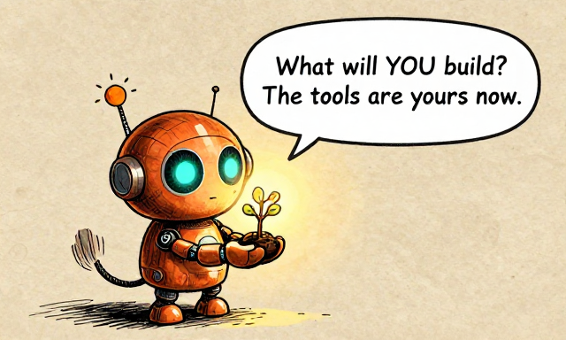
What will YOU build? The tools are yours now.Turing's 1950 prediction: "I believe that at the end of the century the use of words and general educated opinion will have altered so much that one will be able to speak of machines thinking without expecting to be contradicted." He was roughly right. The question has shifted from 'Can machines think?' to 'What do we do about machines that seem to think?'
What is YOUR answer? What do YOU think should come next?